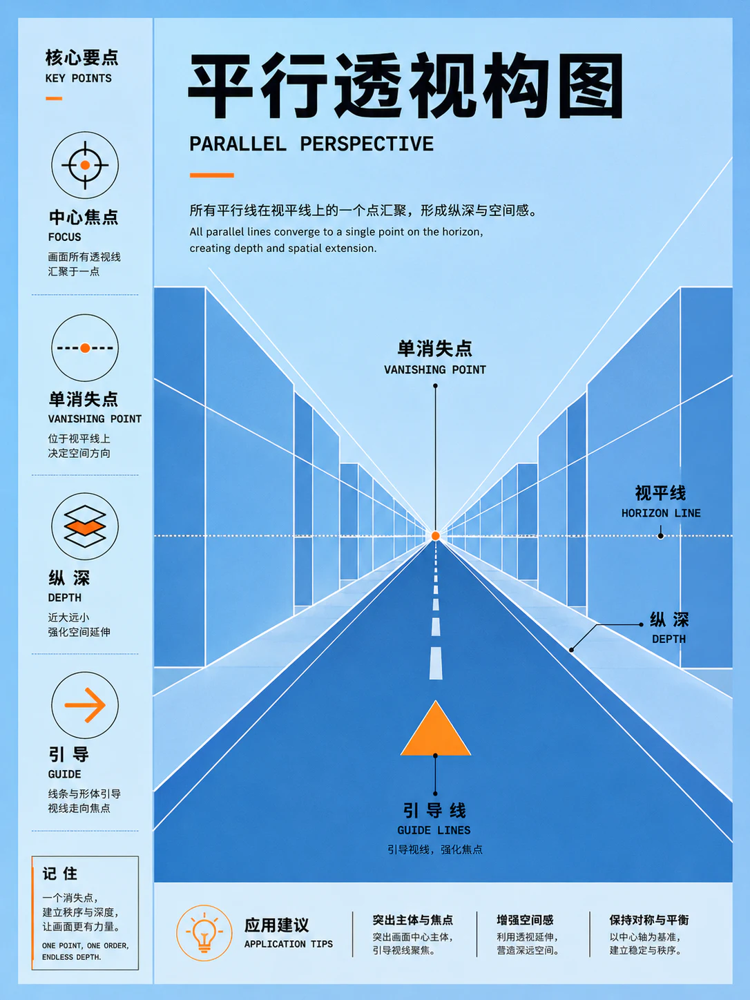

LAYER 02 · DEEPER Z
远层参照卡
始终与主卡共用同一个 perspective-origin 消失点。
把尽头门楼挪到左侧 1/3、让右墙空出来，同时让门楼题字保持方正。 拖画框左右缘 = 转头（偏转变） · 拖橙点 = 移轴（镜头平移，偏转不变 · 见第 04 节移轴镜头）
Why “Parallel” — Only Z-Lines Converge
「所有平行线在视平线上的一个点汇聚，形成纵深与空间感。」
073 号原海报总述 说多了一点
原海报用一句话抓住了纵深感，但从三维几何来看其实说多了一点：一个方正空间里有三组互相垂直的平行线——横向的 X 轴、竖向的 Y 轴，以及迎面远去的 Z 轴。
平行透视之所以叫「平行」，正是因为建筑或物体的正立面与画面严格保持平行：X 横线和 Y 竖线永远横平竖直、绝不相交，只有垂直于画面的 Z 向进深线全部收束到视平线上唯一一个消失点（关于整个透视家族的几何起点可看 069 线性透视，单消失点构图通论见 070 一点透视）。
也别把它和「平行投影」混为一谈：按下对照切换可以看到，平行投影里连 Z 轴都不再汇聚、远近物体严格等大——那是 074 斜投影构图、075 等距构图 与 076 轴测构图 的做法。
Similar Rectangles Across Every Depth Plane
平行透视藏着一条对排版设计极其友好的几何铁律：凡是与画面平行的正立面（一道拱门、一幅展墙、一块门匾或一张界面卡片），无论被推进多深的 Z 平面，它在画面上投出的形状永远是彼此严格相似的矩形。
它的宽和高同时除以深度 Z，所以宽高比 W : H 处处不变、四个内角永远是 90°，不会像斜视角那样出现一边高一边低的梯形挤压；把各层相似矩形的四个角分别连起来，四条直线自然精准扎向同一个消失点（靠重复体块逐渐变小建立纵深节奏的专项用法，见 068 尺度递减构图）。
拖动这里的纵深切片游标，盯着实时读数表里那一列「宽 : 高」——即使面积已经缩到近景的一成多，正立面的方正比例依然纹丝不动。
| 立面层级 | 深度 Z | 投影尺寸 | 宽 : 高 | 相对面积 |
|---|
CSS Perspective & translateZ vs rotateY
平行透视不只活在画室和街道里，浏览器原生的 CSS 3D 变换天天都在用它。依据 W3C CSS Transforms Module Level 2 与 MDN 规范，在父容器上设 perspective（视距）与 perspective-origin（唯一消失点坐标），再只用 translateZ() 把卡片沿 Z 轴推远或拉近，整组页面层级就构成了严格的屏幕平行透视。
因为卡片没有绕 Y 轴旋转（rotateY(0deg)），无论你把消失点切到左侧 30%、正中还是右侧 70%，也无论卡片被推远多少像素，所有文字行与边框依旧横平竖直、清晰好读。
点一下「侧转 18°」或「侧转 32°」立刻能看出反差：一旦叠加 rotateY()，卡片平面不再平行屏幕，第二灭点立即闯入，文字左右字号失衡、斜边开始锯齿发糊——这也是为什么真实界面动效常做 Z 轴推拉，却慎用正文卡片的 Y 轴斜翻。
请细看这四行文字与外框上下沿：纯 translateZ 推远时笔画齐整方正，加入 rotateY 立刻斜缩。
Anchor the End of the Corridor
原海报的「应用建议」把第一条给了「突出主体与焦点：突出画面中心主体，引导视线聚焦」。原因很直接——平行透视把满屏建筑边线拧成了一束探照灯，强迫眼睛沿着走廊直冲单消失点。
如果通道尽头是一片空荡荡的空气或碎乱亮斑，积攒了整幅画面的视觉冲力就会瞬间扑空。反之，在尽头放一个简洁高对比的落点——一道行者背影、一座题字门楼、一件主角产品——整条走廊都会替它作势（利用前景遮挡或画中画框叠出更多景深层次的技巧，分别见 065 前中后景构图、066 前景框架构图 与 067 重叠空间构图）。
One-Variable Check — Side-Wall Window Lintels
下面四张图画的是同一条 0° 偏轴城市大道（门楼正立面严格横平竖直、主消失点在左侧偏轴）。现在要给右侧楼面的二层窗户补画橙色上沿窗框线，四张图只在这条窗沿的走向上不同——哪一版画对了？
